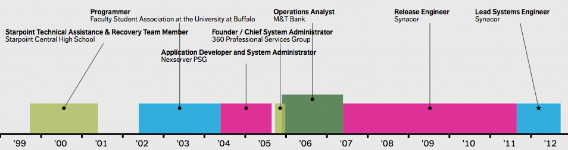
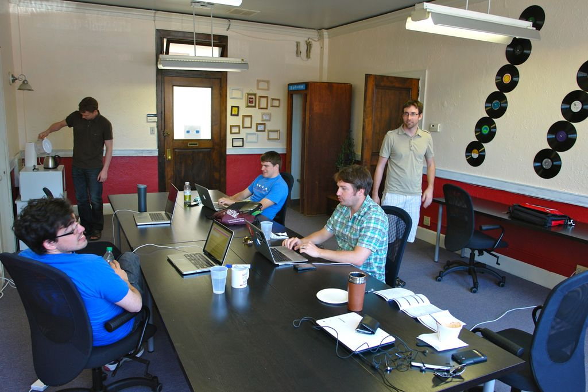
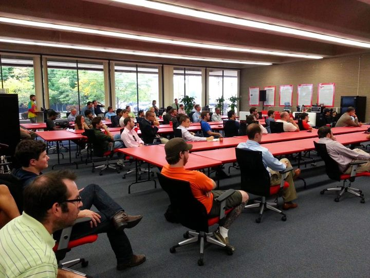

Your Industry
Michael Canzoneri (@mikecanz)
(Former) Lead Systems Engineer at Synacor Inc.
This talk has 4 parts:
- Part 1: My (not too long) Story
- Part 2: Things I've learned that might be useful.
- Part 3: The Buffalo Tech Community
- Part 4: What you should go read/watch when you leave here.
Part 1:
My (not too long) Story
Why I use a lot of names.

FSA IT @ UB
(5 people)
Student Programmer
Takeaways:
- Get that first job ASAP!
- System administrators are not created equal.
- You can really have a great impact on people's lives.
Nexserver PSG
(8-15 people)
WTF is PSG?
Developer / All The Things
Takeaways:
- Deals fall through
- Taking on work is a huge commitment.
- Taking on work is a huge time investment.
- It's really easy to have moderate success...
- ...and then explode!
360 PSG
(4 people)
Takeaways:
- Starting up sucks like getting punched in the face sucks.
- Authority isn't given, it's taken.
- Be ok with being poor.
- You can and will do every job and fill every role.
- You team will count on you more that anything.
M&T Bank
(5 person team)
Operations Analyst
Developer / Sysadmin
Big companies have bad titles.
Takeaways:
- Harder to make a big impact.
- Great place to work.
- Easy to get stuck.
- Not such a great place to grow (fast).
Synacor
(135 - 300 people)
Release Engineer
What's a Release Engineer?
Takeaways:
- Market crashes are terrible!
- Going public is AWE$OME!
- Going public is TERRIBLE!
- "Culture is the legacy of leadership." - Not Me
- It's about the people.
Part 2:
Things I've learned that might be useful.
College Major vs Company Title/Role
We create value by willing it into existence.
The people are what's important.
Most good developers never apply for a job.
Poor performers don't slow you down they stop you.
Every task or project has that one thing that nobody thought of.
"The true sign of expertise is error recovery not failure avoidance" - Pixar's Randy Nelson
10 years of experience is not the same as 1 year of experience for 10 years.
Our industry has a history that you should be familiar with:
- Douglas Engelbart
- Alan Kay
- Danny Hillis
- John McCarthy
- Again, it's about the people!
Part 3:
The Buffalo Tech Community
BarCamp Buffalo
March 2009
Buffalo Open Coffee Club
May 2010
Cowork Buffalo
May 2012

z80 Labs
August 2012

nextplex.com/buffalo-ny
We've come a long way.
Part 4:
What you should go read/watch when you leave here.
Books:
Inviting Disaster: Lessons From the Edge of Technology (James R. Chiles)
The Cathedral and the Bazaar (Eric S. Raymond)
Design Is A Job (Mike Monteiro)
Founders at Work (Jessica Livingston)
The Design of Everyday Things (Donald A. Norman)
If you need help send me an email!
mikecanzoneri@gmail.com
This presentation is in git and on github
https://github.com/mikecanz/s5_presentations
Questions?
[any material that should appear in print but not on the slide]